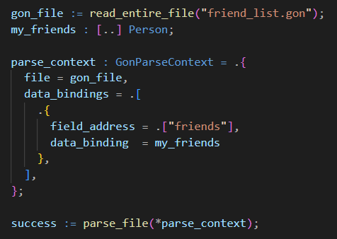

The Jai GON Parser
The Jai GON Parser is a fast and powerful SAX-style parser for GON files with a simple interface that one can begin using within minutes.
This parser leverages the power of Jai's runtime type information to automatically convert string data from the GON file into its proper internal binary type. This automates away all of the routine boilerplate that one often finds oneself writing in serialization code. All you have to do is tell the parser where in the GON file to find your desired data and what variable you want that data stored to. The parser handles any necessary type conversions automatically. It also handles complex, nested structures and all types of arrays.
The functionality of the parser can also be extended or modified through callback procedures. This can be used to implement custom data loading procedures for special types, or modify previously loaded data.
And all of this is done in a single linear pass over the source file. The result is an extremely powerful and easy to use parser with almost no memory footprint.
An Introduction to the Format
Every field in a gon file consists of a name and value pair (unless the object is in an array, in which case it has no name). Each token (a name or value) is separated by whitespace, unless encased in quotation marks, in which case the content of the quotation marks is treated as a single token. There are three types of gon field:
- field - contains a single value
- object - contains multple named fields enclosed in curly braces
- array - contains multple anonymous fields enclosed in square brackets
sample_object {
file_name test.gon
number 35.35
string "this is a string"
array [ 1 [ 2.1 2.2 ] 3 ]
nested_object {
number 53.53
string "this is a string"
array [ 1 2 " three " 4 five 6 7 8 ]
}
}In this example, we have a root object called "sample_object" which contains several fields, including an array and another nested object. Objects and arrays can be nested as deeply as you wish without issue. Because all of the data in a gon file is plain text, there is no inherent issue with mixing data/fields/objects of different types. You can also placed comments in a file with '#'. Everything after this token will be ignored until the end of the line.
I find that the extremely minimal syntax of the format makes it ideal for situations requiring manual data entry. I currently use the format for entering variable values in my upcoming game's level editor in leiu of a gui interface, since it is extremely easy to edit the text and reload the file whenever I need to update the data. I also use the format for all of my configuration files as it is extremely easy for users to edit and requires very little explanation.
Usage
Data Bindings
Using the parser for simple data loading is extremely simple. All one has to do is to create a parse context and set the data bindings that will be used to extract the information one wants from a file. This is as easy as providing the name of the GON field we want to find and the variable in our program we want to bind its value to. When this variable is provided in a data binding, it is implicitly cast to an "Any". This is a built-in type in Jai that consists of a data pointer and a pointer to type_info for the type of the variable being cast.
For more detailed examples, see the sample programs that are included with the module's source code. These will introduce each of the features of the parser individually, explaining everything you need to know.
Coming Features
Callback Events
Callbacks are currently still in the works. The original plan was to implement a traditional SAX-style parser which operates entirely through callback procedures, but after implementing data bindings the callbacks became completely unnecessary for basic data loading. So, as I work towards implementing callbacks, I want to ensure that they are as powerful as possible in extending the base functionality of the parser. In a traditional SAX-style parser, the user provides handler functions for the main events that occur as parsing proceeds through a file. This functionality will surely be implemented for this parser, but we can go further. Because this parser has information about a program's data types, we could generate many more types of events as we encounter fields with data bindings to specific types. This could be used to create custom data loading procedures for complex data types such as linked lists and hash tables, or to provide initialization functions for types so that we can more safely add elements to resizeable arrays.
The current implementation already allows for easily creating custom loading procedures for complex data types such as linked lists and binary trees. Because the type information system in Jai stores information on the parameters for polymorphic structs, it is fairly trivial to implement callbacks that can perform specific data transformations depending on the parametric type of structs representing such data structures. This gives the user a great deal of flexibility to define data however they wish within the confines of proper GON syntax.
Custom Parse Procedure Generation
One of the features that is currently in development is the ability to perform compile-time generation of custom, optimized parsing procedures. These procedures will essentially bake in the structure and data of a particular GON file, eliminating the need for dynamic type checking and dynamic dispatch for callbacks. This should greatly increase the speed at which files can be parsed, and for little to no extra effort on the part of the programmer, since the interface will be almost exactly the same.
Motivation
I have written a GON parser in 3 different languages now, each time improving the design substantially.
In C#, I wrote a straightforward translation of the original C++ version for use in another project. This one was nothing special, but it allowed my to become more familiar with the format and how to struture a parser, generally speaking.
In C, I wrote a very fast implementation (uGON) which saw a 150x speed increase over the original C++ implementation. This version took a lot of influence from RapidXML in terms of structure and optimization methods. Despite being very fast, its usefulness is somewhat stunted by its reliance on a DOM-style intermediate format. My initial idea for the parser was actually to augment the format with type information that could be used to load data directly into a destination struct or variable, but I ended up abandoning this idea after a short period of time.
Now equipped with some more experience (and a more capable language), with this Jai implementation I've been able to leverage runtime type information to make an incredibly useful parser for a fraction of the effort it would have taken in other languages. And despite offering better features and functionality than its predecessors, I anticipate that this new implementation will eventualy be even faster than the C implementation. I also may be able to back-port some of the features of the Jai GON parser to uGON eventually, though it will need to rely on user-provided type information. With this latest incarnation, I feel that I finally have a very capable plug-and-play solution for serialization that I will undoubtedly be making use of in all my future projects.